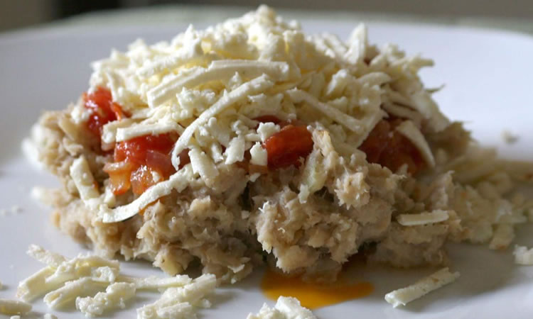

Cayeye

Description
This dish is common in the north coast of Colombia, and simply
put it is mashed green bananas. It is eaten with grated cheese
and sometimes "hogao" or "sofrito."
The "hogao" or "sofrito" is a stir-fry made with tomatoes and onions.
Ingredients
- Green bananas.
- Grated cheese.
- Butter.
- Tomatoes, onions and garlic. (optional)
Steps
- First, peel the bananas and put them to boil.
(Be careful, when they're green the skin of the bananas
can stain hands and clothes)
- (Optional) Chop the tomatoes, the onions and the garlic,
then fry them on a pan.
- Once cooked, mash the bananas with a little bit of butter.
- Add the cheese and the sofrito on top, mix and eat!